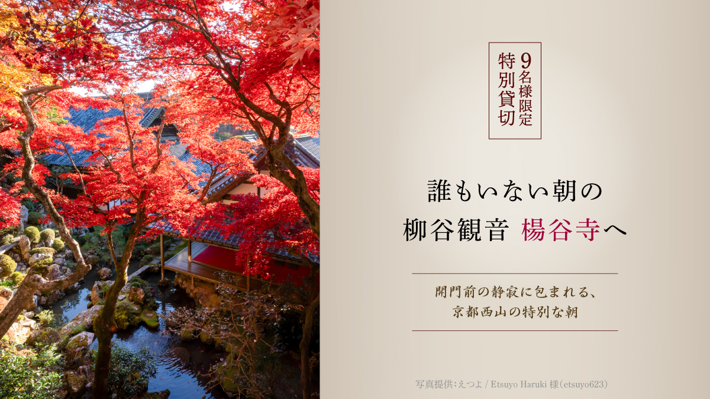
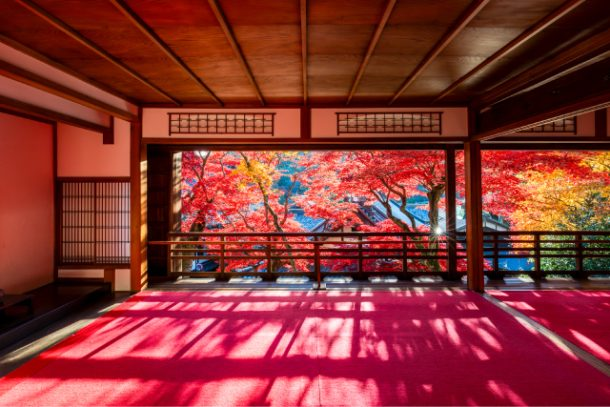
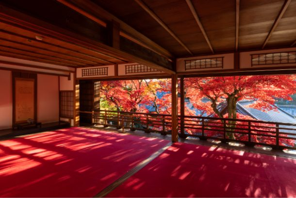
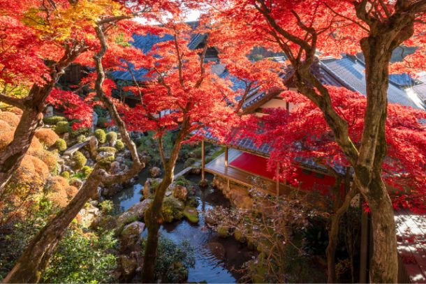
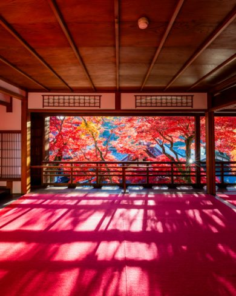
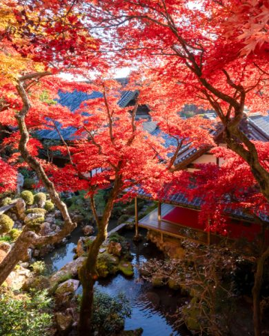

最新の情報は 公式サイトのツアーページ をご覧ください。
【9名様限定・特別貸切】誰もいない朝の柳谷観音 楊谷寺へ ～開門前の静寂に包まれる、京都西山の特別な朝～

※大人・子ども同額
※1名様からご予約いただけますが6名様以上で運行します。
| お申込み状況(最少催行人数6名) |
※最新のお申込み状況はお問い合わせください
朝8時、まだ一般の参拝が始まる前の柳谷観音 楊谷寺へ。
本ツアーは、9名様限定で、開門前の楊谷寺を特別貸切。
人の少ない静かな境内で、色づく紅葉をゆっくりと眺めたり、思い思いに写真を撮ったり。
混雑を気にすることなく、秋の京都を心ゆくまでお楽しみいただけます。
さらに、通常の参拝とはひと味違う特別な時間に、上書院から望む美しい紅葉風景もゆったりとご鑑賞ください。
楊谷寺で特別な朝を過ごしたあとは、乗願寺、光明寺へ。
京都西山の美しい秋をめぐりながら、昼前には京都駅へ戻ります。
人混みを避けて、京都の秋をじっくり楽しみたい方にぴったりの朝旅です。
「こんな京都、知らなかった」そんな旅の思い出を、ぜひ見つけに来てください。

写真提供：えつよ / Etsuyo Haruki 様（etsuyo623）
| おすすめポイント |
| 🌄9名様だけの特別な朝。開門前の楊谷寺を貸切 一般の参拝が始まる前の楊谷寺へ。わずか9名様限定で境内を特別貸切。静寂に包まれた朝の境内を、ゆっくりとお楽しみいただけます。 |
| 🍁上書院から眺める、美しい秋の景色 楊谷寺を訪れたらぜひ楽しみたいのが、上書院から望む紅葉。 美しく色づく木々を眺めながら、時間を忘れて過ごすひとときをお楽しみください。 |
| ✨人混みを気にせず、紅葉と向き合う贅沢な朝 観光客でにぎわう時間とは違い、朝の寺院には凛とした空気が漂います。 ゆっくり景色を眺めながら、心ほどけるひとときを。 |
| 🚙京都西山の名刹をめぐる 楊谷寺だけでなく、乗願寺、光明寺へも立ち寄り。京都市内の定番観光とは少し違う、静かな西山の魅力を訪ねます。 |
| 📷旅の目的になるほどの「特別な体験」 |
行程
| 時間 | 場所 |
| 7:10 | 京都駅八条口MKタクシーのりば |
| 8:00 | 柳谷観音 楊谷寺 |
| 9:10 | 乗願寺 |
| 10:00 | 光明寺 |
| 11:50頃 | 京都駅 |
※渋滞等で、予定通りの滞在時間をお取りすることができない場合がございます。予めご了承ください。
※拝観時はドライバー同行いたしません。
◆気象状況により紅葉の見ごろは前後する場合があります。
柳谷観音 楊谷寺




写真提供：えつよ / Etsuyo Haruki 様（etsuyo623）
【MKトラベルLINE公式アカウント】
MKトラベルの新規ツアー情報をLINEでお届けいたします

【各SNSでも京都の情報やツアー情報をお届けしています】


旅行条件
| ツアー番号 | T321MK |
| 出発地 | 京都市内 |
| 添乗員／ガイド | 添乗員：なし（乗務員がその業務を代行いたします） |
| 食事 | なし |
| 最少催行人数 | 6名（最大9名） |
お申込みについてのご注意
※最少催行人数は6名様です。最少催行人員に満たない場合は、旅行の実施を取りやめることがあります。出発の3日前にその旨をご連絡し、お客様から当社がお預かりしている旅行費用の全額をお返しいたします。
※旅行条件・旅行代金は、2026年9月1日現在を基準としています。
※行程および帰着時間は交通事情などにより変更になる場合があります。
※お申込みの前に弊社の募集型企画旅行規約をご確認ください。
よくある質問
Q.1名ですが、申し込みできますか？
A.はい。お一人参加の方もたくさんいらっしゃいますので、お気軽にお申し込みください。
Q.参加したかったけど、日程が合いません／終了していました
A.貸切で再現できる場合もございますのでご相談ください。お問合せフォームはこちら
Q.ほかに楊谷寺の観光ができるツアーはありますか？
A.はい。秋の夜の拝観であれば、【各日10名様限定】夜の柳谷観音 楊谷寺へ -送迎プラン-、17日縁日であれば毎月17日限定!!京都のかわいい花手水と心ときめく癒し旅 ～楊谷寺＆勝林寺巡り～、上記以外の期間であれば京都の隠れた名所ツアー ～ 長岡京の名刹＆花手水を楽しむ旅 ～や京都西山お手軽コース ～なりひら寺と西山三山を訪ねて～がおすすめです。
＜お問合せフォームはこちら▶＞
＜MKトラベルTOPはこちら▶＞
＜おすすめツアー一覧はこちら▶＞
お支払い方法
【お電話・ご来店でのご予約の場合】
・クレジットカード決済
・コンビニ決済【WEBシステムよりご予約の場合】
・クレジットカード決済
・コンビニ決済
・ＴＡＣＰＯ
お支払方法詳細はこちら
お客様のご都合でご予約をキャンセルされる場合は、すみやかに下記お問合せ先までご連絡ください。
キャンセル料
11日目に当たる日以前
無料
10日目に当たる日以降
20%
7日目に当たる日以降
30%
旅行開始日の前日
40%
旅行開始日の当日
50%
旅行開始後又は無連絡
100%